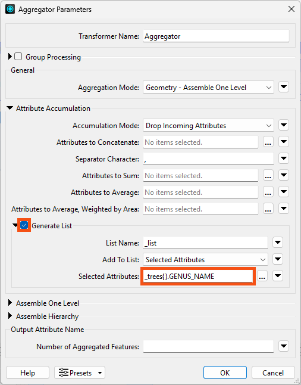
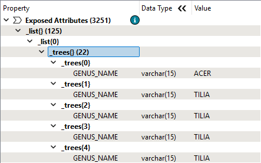
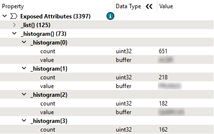
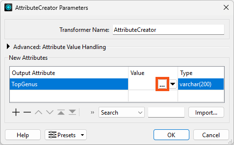
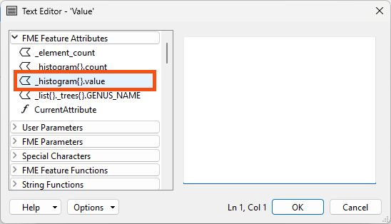
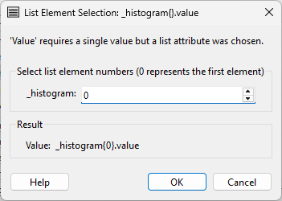
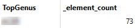

You could use a ListBuilder here instead, adding just _trees{}.GENUS_NAME to the list. The result would be the same as using the Aggregator.
After completing this lesson, you’ll be able to:
Now that Jennifer has a list of every tree in each park, she'd like to do the following:
Jennifer opens the starting workspace (C:\FMEData\Workspaces\AdvancedDataTransformation\manipulate-lists-using-transformers.fmw) in FME Workbench (2025.0.1 or later).
She's added a TestFilter to filter park polygons that have trees.
She runs the workspace with feature caching enabled to store caches.
To get the most common genus, Jennifer needs to combine the separate lists on each park feature into one big list. She can do that using an Aggregator transformer.
She adds one connected to the TestFilter's Trees output port.
She checks Generate List and adds only trees{}.GENUS_NAME to the list:

She clicks OK, runs the workspace, and inspects the Aggregator's single output feature. The Feature Information window shows a new _list attribute with 125 elements. Each element stores the _trees list for each park, recording the genus of each tree:

You could use a ListBuilder here instead, adding just
_trees{}.GENUS_NAMEto the list. The result would be the same as using the Aggregator.
Jennifer adds a ListHistogrammer connected to the Aggregator's Aggregate port to count the times each genus appears in this new list.
She configures it to use _list{}.trees{}.GENUS_NAME as the Source List Attribute:

This configuration means the transformer will count the values of all GENUS_NAME attributes in the list and store the result in a new list attribute called _histogram.
She clicks OK, runs the workspace, and inspects the ListHistogrammer's Output cache. The Feature Information Window shows the single feature now has a _histogram list attribute.
Make sure you collapse the large
_listattribute still present on the feature;_histogramwill be below it in the Feature Information Window.
Expanding that attribute shows the histogram's results. The most common value is stored as element 0 in the list, with the count attribute reflecting the number of times it appears in the list and the attribute value showing the genus name.

Take note of the top
GENUS_NAME; you will need it for the quiz.
Now that Jennifer has found the most common genus, she'd like to store its name in an attribute.
She adds an AttributeCreator attached to the ListHistogrammer's Output port to do so.
She adds a new Output Attribute called TopGenus. She clicks the ellipsis button to open the Text Editor:

She double-clicks _histogram{}.value on the left under FME Feature Attributes to insert it:

Here, she observes a behavior unique to list attributes. Instead of inserting _histogram{}.value in the Text Editor, the List Element Selection dialog appears:

She leaves the value of 0 because she wants to extract the value of the first element in the list, which is the most common genus.
She clicks OK.
To extract a single value from a list attribute, you must specify the index to use. Referring to all the values in a list in the Text or Arithmetic Editor or a transformer parameter is impossible. You need to use a transformer that accepts list values as input to do that.
If you don't want to hard-code the element number, use the Text Editor to specify an attribute instead of a number.
For example, you can use that method to find the least common genus. Use a ListElementCounter to count all the elements in
_histogram, then supply the_element_countresult as the index to retrieve the last value:
@Value(_histogram{@sub(@Value(_element_count),1)}.value)Note that you must subtract 1 from
_element_countto get the last entry in the list since_element_countstarts at 1 and list indexes start at 0.
Jennifer runs the workspace and inspects the AttributeCreator's Output cache. The new attribute stores the name of the genus:

Find the most and least common genus for trees within parks.
How do you think the process outlined here will handle ties?
Is there an easier way to get this answer from the starting data?
Yes, in this case, you could actually get the answer without using lists!
Give it a try!
If you get stuck, here are the steps for a simple way to do it:
- Use a Clipper to filter the trees to only trees within parks.
- Use a StatisticsCalculator grouped by
GENUS_NAMEto get the Total Count forGENUS_NAME(or any attribute).- Use a Sorter to sort
GENUS_NAME.total_countNumeric Descending.- The first feature reports the most common genus.
What's the lesson? Lists are powerful, but they are not always necessary! If you can design it, a non-list-based approach is often simpler.
Jennifer could further process and analyze her lists using other list transformers. Here are some examples:
| Operation | Transformer |
| Count the number of trees in each park | ListElementCounter |
| Find the maximum tree diameter | ListSorter & ListIndexer |
| Find the count of each species | ListHistogrammer |
| Create a list of species | ListConcatentaor |
| Find which parks have an Oak tree | ListSearcher |
| Create a table of park trees with the park name | ListExploder |
| Find the average tree height in a park | ListSummer |
| Find the minimum/maximum of tree diameters | ListRangeExtractor |
Refer to the FME documentation and the following example workspaces for more information on these transformers: